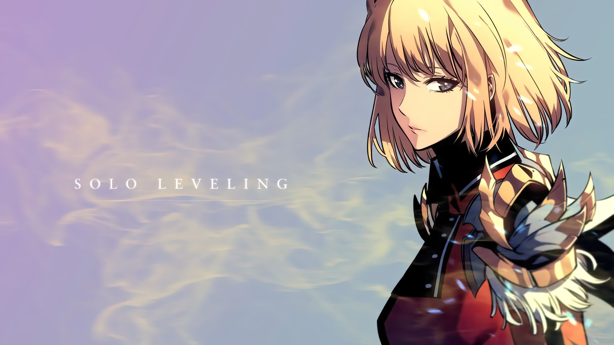
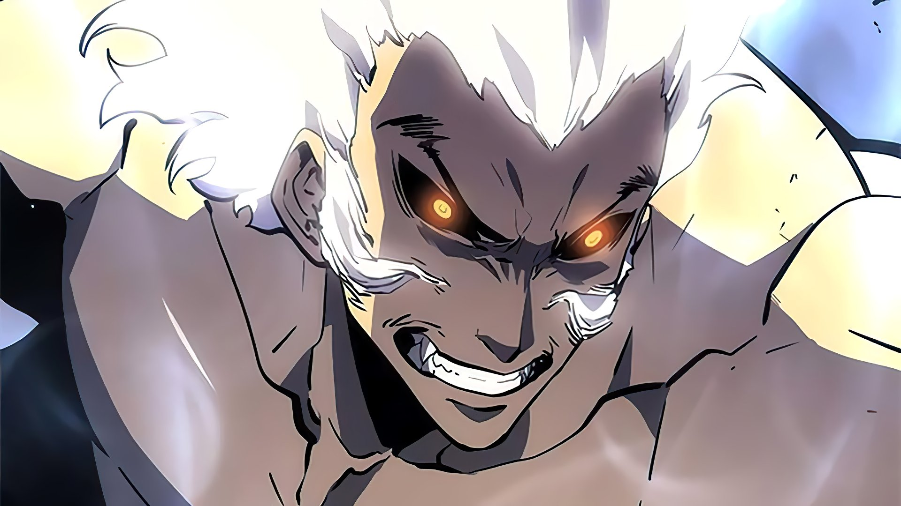
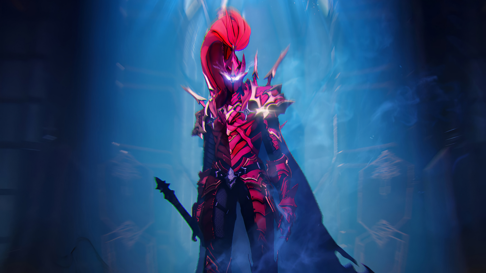
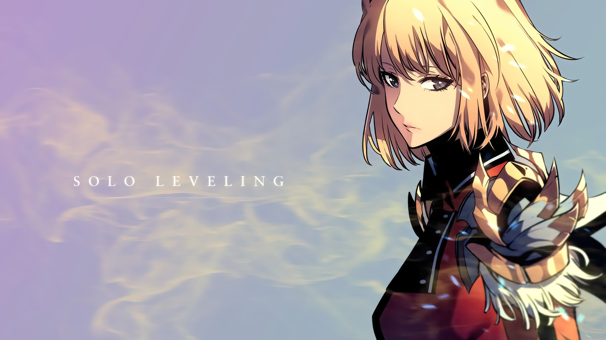
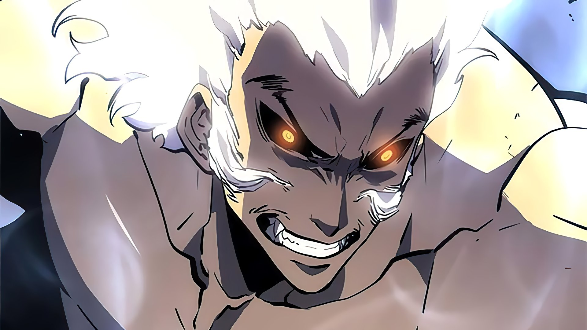
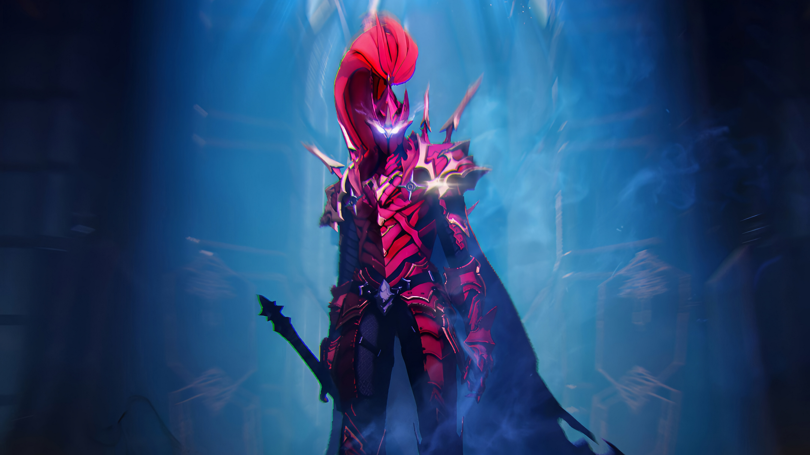
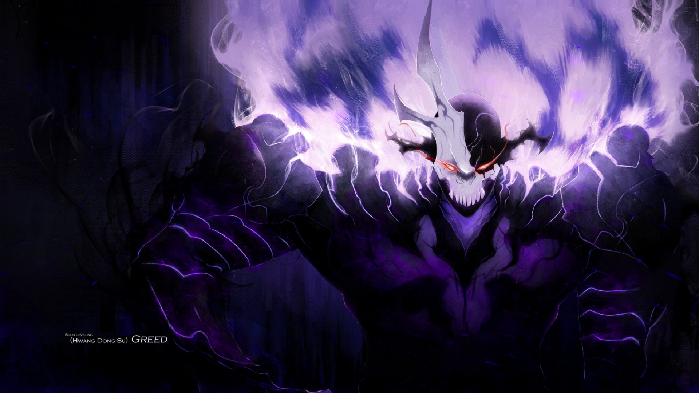
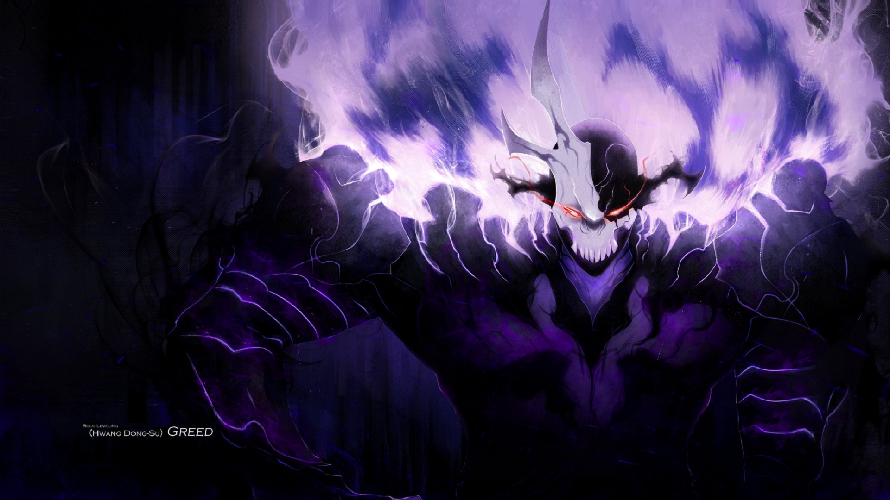

 

Sung Jin-Woo
Sung Jin-Woo, Conhecido como Caçador mais fraco da humanidade, é um caçador de Rank-E. Ele é convocado somente para raids de Ranks baixos. Depois do incidente das raids duplas, Sung Jin-Woo passa por um segundo despertar, indo além das expectativas de um suposto Rank-E.
Chae Hae-In
Chae Hae-In é conhecida por sua força e suas habilidades no combate. Ela é uma caçadora dedicada e altamente respeitada. Chae Hae-In é uma caçadora de Rank-S, o que significa que ela é uma das melhores e mais poderosas no mundo dos caçadores.
Baek Yoon-Ho
Baek Yoon-Ho é conhecido por suas habilidades de combate excepcionais e sua força física. Baek possui habilidades especiais relacionadas à sua classe de caçador. Suas habilidades permitem que ele enfrente monstros e desafios de alto nível com grande eficiência. Baek é um caçador de Rank-S.
Igris
Igris, O comandante Vermelho, é um dos generais mais poderosos dos monstros. Igris é conhecido por sua impressionante força e habilidades de combate. Igris, que teve sua derrota pelas mãos de Sung Jin-Woo, Agora serve ao mesmo que o derrotou. Igris esperava pela volta de seu rei, mas logo após ser derrotado, escolheu servir Sung Jin-Woo, o novo Monarca das Sombras.
Choi Jong-In
Choi Jong-In é um dos caçadores de Rank-S. Choi Jong-In possui habilidades extraordinárias de combate e uma força física impressionante. Choi Jong-In é conhecido por sua técnica de luta altamente refinada e pela sua capacidade de enfrentar inimigos poderosos. Seu equipamento tambem é de alta qualidade, maximizando suas habilidades no combate.
Beru
Beru é um combatente altamente habilidoso e poderoso. Ele possui uma força física impressionante, uma resistência notável e habilidades de luta excepcionais. Beru é um dos generais que servem a Sung Jin-Woo. Beru tem uma personalidade que combina lealdade, orgulho e respeito por Sung Jin-Woo.
Greed
Greed é um dos generais de Sung Jin-Woo, conhecido por sua habilidade em combate. Ele é um monstro poderoso que foi ressuscitado e transformado em um aliado leal de Jin-Woo, após ser derrotado pelo mesmo. Greed é um combatente extremamente forte, com habilidades que o tornam um dos generais mais formidáveis de Jin-Woo. Sua força física é impressionante, suas habilidades de combate o torna um adversário temido.